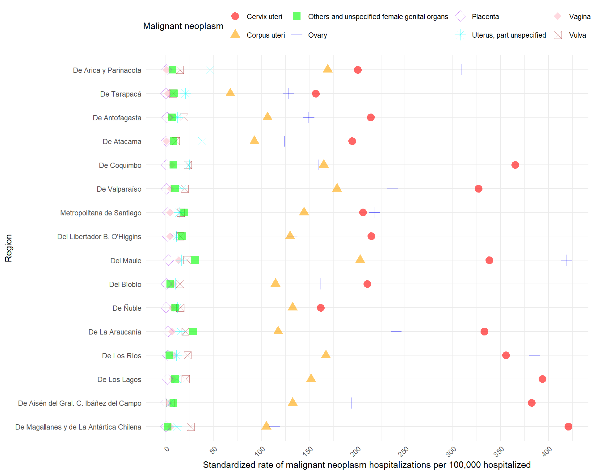

Malignant neoplasms of female genital organs C51-C58 in Chile from 2010 to 2023
María Elisa Joannon Ovalle
Amaru Simón Agüero Jiménez ![]()
1 Introduction
Vaginal cancer, vulvar cancer, cervical cancer, and cancer of the uterine corpus are pathologies encompassed within the term malignant neoplasms of the female genital organs (MNFGO)1. MNFGO represent a significant health concern worldwide. It is important to note that incidence and mortality rates for these pathologies vary according to factors such as geographic location, demographic changes, and screening practices, among others2. Consequently, certain regions have experienced a decrease in the incidence rate, associated with improved effectiveness of screening strategies, while other more underserved areas have seen an increase in incidence and mortality3.
Regarding MNFGOs in Chile, no evidence was found for vaginal cancer, vulvar cancer, and cancer of the uterine corpus. However, cervical cancer accounted for 6.6% of the total cancers diagnosed in 2018. Additionally, age-standardized incidence and mortality rates of 12.2 and 5 per 100,000 women, respectively, were estimated4.
In this context, research on the incidence of hospitalizations for malignant neoplasms of female genital organs in Chilean women is essential for obtaining information that will not only contribute to scientific knowledge but also aid in improving the quality of life of Chilean women. Furthermore, such research will help raise awareness of the impact of these diseases on society, promoting the need for more effective public health interventions.
1.1 Aim
Assess the incidence of hospitalizations due to malignant neoplasms of female genital organs in Chilean women between the years 2010 and 2023.
2 Methodology
This corresponds to a quantitative design, historical retrospective cohort based on the analysis of secondary, national, anonymized data from hospital records between the years 2010 and 2023. These open data on hospital discharges are available in the Department of Health Statistics and Information of the Ministry of Health of Chile, accessible via the following link. Descriptive statistics were used to estimate the standardized rates and rate ratios of hospitalizations for malignant neoplasms of female genital organs (ICD-10 codes C51-C58) in Chile between the years 2010 and 2023. These hospital rates will be evaluated according to sociodemographic variables and their temporal evolution between the years 2010 and 2023.
2.1 R packages
Code
install_and_load <- function(package) {
if (!require(package, character.only = TRUE)) {
utils::install.packages(package)
library(package, character.only = TRUE)
}
}
# List of packages to be installed and loaded
packages <- c("devtools", "renv", "tidyverse", "janitor", "data.table", "flexsurv","readxl",
"kableExtra", "reticulate", "FactoMineR", "factoextra", "knitr","plotly","censo2017", "ggbreak", "patchwork","latex2exp","chilemapas")
# Apply the function to each package
invisible(capture.output(sapply(packages, install_and_load)))
opts_chunk$set(
warning = FALSE,
message = FALSE
)
rm(list = ls())2.2 Data Administration
Code
# Define the path for the HOSP.rds file
output_file <- paste0(gsub("docs", "", getwd()), "data/data_output/HOSP.rds")
# Check if the file already exists
if (!file.exists(output_file)) {
# If the file doesn't exist, execute the code
# Get the list of CSV files in the "data/EGRESOS" folder
files <- list.files(path = paste0(gsub("docs", "", getwd()), "data/EGRESOS/"), pattern = "\\.csv$", full.names = TRUE)
# Define the columns you need to select, considering potential variations in the column names
required_columns <- c("SEXO", "GRUPO_EDAD", "ETNIA",
"GLOSA_PAIS_ORIGEN", "COMUNA_RESIDENCIA", "GLOSA_COMUNA_RESIDENCIA",
"REGION_RESIDENCIA", "GLOSA_REGION_RESIDENCIA", "PREVISION", "GLOSA_PREVISION",
"ANO_EGRESO", "DIAG1", "DIAG2", "DIAS_ESTADA", "CONDICION_EGRESO")
# Function to read each file and select the required columns
read_file <- function(file) {
# Read the data, assuming the delimiter is a semicolon (you can change it if necessary)
data <- read_delim(file, delim = ";")
# Select the necessary columns (handling cases where the column name is slightly different)
data_selected <- data %>%
select(any_of(required_columns))
return(data_selected)
}
# Load all datasets and name them according to the file name (without extension)
data_list <- lapply(files, read_file)
# Assign names to the list elements using the file names without the extension
names(data_list) <- tools::file_path_sans_ext(basename(files))
# Combine all datasets into one
HOSP <- bind_rows(data_list) %>%
filter(SEXO != "*")
# Save the combined dataset as an RDS file
saveRDS(HOSP, file = output_file)
} else {
# If the file exists, load it
HOSP <- readRDS(output_file)
}
HOSP <- HOSP %>%
mutate(across(where(is.character), ~ iconv(., from = "latin1", to = "UTF-8"))) %>% # Convert all character columns to UTF-8
mutate(
GRUPO_EDAD = as.character(GRUPO_EDAD), # Ensure GRUPO_EDAD is character
GRUPO_EDAD = recode(GRUPO_EDAD,
`menor de un año` = "0 - 9",
`1 a 9` = "0 - 9"), # Recode the age groups
GRUPO_EDAD = gsub(" a ", " - ", GRUPO_EDAD),
GRUPO_EDAD = gsub(" y más", " +", GRUPO_EDAD),# Replace "a" with "-"
GRUPO_EDAD = as.factor(GRUPO_EDAD) # Convert back to factor if needed
)Code
P_DATA <- read_excel(paste0(gsub("docs", "", getwd()), "/data/TOTAL/P_Data_Extract_From_World_Development_Indicators.xlsx"),
col_types = c("skip", "skip", "text",
"text", "numeric", "numeric", "numeric",
"numeric", "numeric", "numeric",
"numeric", "numeric", "numeric",
"numeric", "numeric", "numeric",
"numeric", "numeric")) %>%
filter(grepl("FE.5Y$", `Series Code`) | grepl("POP.TOTL.FE.IN$", `Series Code`)) %>%
pivot_longer(cols = starts_with("20"),
names_to = "Year",
values_to = "Population") %>%
complete(`Series Code`, Year) %>%
select(-1) %>%
pivot_wider(names_from = `Series Name`,
values_from = Population) %>%
mutate(across(c(-Year,-`Population, female`), ~ . * `Population, female`/100)) %>%
pivot_longer(cols = -Year,
names_to = "GRUPO_EDAD",
values_to = "n") %>%
mutate(Grupo_Edad_Agrupado = case_when(
grepl("00-04|05-09", GRUPO_EDAD) ~ "0 - 9",
grepl("10-14|15-19", GRUPO_EDAD) ~ "10 - 19",
grepl("20-24|25-29", GRUPO_EDAD) ~ "20 - 29",
grepl("30-34|35-39", GRUPO_EDAD) ~ "30 - 39",
grepl("40-44|45-49", GRUPO_EDAD) ~ "40 - 49",
grepl("50-54|55-59", GRUPO_EDAD) ~ "50 - 59",
grepl("60-64|65-69", GRUPO_EDAD) ~ "60 - 69",
grepl("70-74|75-79", GRUPO_EDAD) ~ "70 - 79",
grepl("80", GRUPO_EDAD) ~ "80 +",
TRUE ~ "Total" # This is included as a safeguard in case there are unexpected values
)) %>%
group_by(Year, Grupo_Edad_Agrupado) %>% # Group by Year and the new age group
summarise(n = sum(n, na.rm = TRUE)) %>%
mutate(Year = gsub(" \\[.*\\]", "", Year)) # Remove unwanted characters from the Year columnCode
# Define the path for the CENSO2017.rds file
output_file_censo <- paste0(gsub("docs", "", getwd()), "data/data_output/CENSO2017.rds")
# Check if the file already exists
if (!file.exists(output_file_censo)) {
# If the file doesn't exist, download, process, and save the data
# Connect and download census data
censo_conectar()
censo_descargar()
# Select relevant columns and mutate data
CENSO2017 <- censo_tabla("personas")[,c(1,5,6)]
CENSO2017 <- CENSO2017 %>%
mutate(p09 = replace(p09, p09 %in% c(132, 131), NA)) %>%
mutate(p08 = replace(p08, p08 %in% c(3, 0), NA)) %>%
mutate(SEXO = factor(p08, levels = c(1, 2), labels = c("HOMBRE", "MUJER"))) %>%
mutate(GRUPO_EDAD = cut(p09,
breaks = c(-Inf, 9, 19, 29, 39, 49, 59, 69, 79, 89, Inf),
labels = c("0 - 9", "10 - 19", "20 - 29", "30 - 39", "40 - 49",
"50 - 59", "60 - 69", "70 - 79", "80 - 89", "90 +"),
right = FALSE))
# Save the processed dataset as an RDS file
saveRDS(CENSO2017, file = output_file_censo)
} else {
# If the file exists, load it
CENSO2017 <- readRDS(output_file_censo)
}
STDPOPULATION <- CENSO2017 %>%
filter(SEXO=="MUJER") %>%
group_by(GRUPO_EDAD) %>%
summarise(n = n(), .groups = 'drop') %>%
mutate(MUJER_STD = n*100000/sum(n))2.3 Hospitalization Rates of Malignant neoplasms of female genital organs C51-C58 ICD chapter standardized by age group.
2.3.1 Direct standardization rates (DSR).
For the purpose of calculating the hospitalization rate for each C51-C58 ICD code, the direct standardization by age group (stratum) method was employed5 6. The total population of Chilean females by year (2010-2023) is obtained from World Bank Open Data.7. This method utilizes a standard population from the 2017 Chilean Census as a reference8. The formula used to calculate DSR is as follows:
\[\begin{align*} DSR=\frac{\sum^k_{i=1}N_i\frac{y_i}{n_i}}{\sum^k_{i=1}N_i} \end{align*}\]where
\(N_i\) is the reference population size for the ith stratum.
\(y_i\) is the number of events observed in population in the ith stratum.
\(n_i\) is the person-time for the ith stratum of the study population.
Code
#YEAR###########################################################################
HOSP_C5 <- bind_rows(HOSP_C5 <- HOSP %>%
filter(grepl("^C5[1-8]", DIAG1)) %>%
group_by(ANO_EGRESO, GRUPO_EDAD) %>%
summarise(n = n(), .groups = 'drop') %>%
mutate(across(everything(), ~na_if(., NA) %>% replace_na(0))) %>%
mutate(ANO_EGRESO = as.character(ANO_EGRESO)),
HOSP_C5_TOTAL <- HOSP %>%
filter(grepl("^C5[1-8]", DIAG1)) %>%
group_by(GRUPO_EDAD) %>%
summarise(n = n(), .groups = 'drop') %>%
mutate(across(everything(), ~na_if(., NA) %>% replace_na(0))) %>%
mutate(ANO_EGRESO = "Total"))
TOTALS_HOSP_C5 <- bind_rows(TOTALS_HOSP_C51_C58_REG_TOTAL <- HOSP %>%
filter(SEXO == "MUJER") %>%
group_by(GRUPO_EDAD) %>%
summarise(
total_MUJER = n()
) %>%
mutate(ANO_EGRESO = "Total"),
TOTALS_HOSP_C5<- HOSP %>%
filter(SEXO == "MUJER") %>%
group_by(GRUPO_EDAD, ANO_EGRESO) %>%
summarise(
total_MUJER = n()
))
HOSP_C5_RATES <- HOSP_C5 %>%
left_join(TOTALS_HOSP_C5, by = c("GRUPO_EDAD","ANO_EGRESO")) %>%
left_join(STDPOPULATION[,c(1,3)], by = "GRUPO_EDAD") %>%
mutate(
rates = (n / total_MUJER),
) %>%
mutate(
DSR_female = MUJER_STD*rates
)
HOSP_C5_DSR <- HOSP_C5_RATES %>%
group_by(ANO_EGRESO) %>%
summarise(`DSR C51-C58 Hosp. per 100,000 hospitalized ` = sum(DSR_female),
.groups = 'drop')
TABLE1 <- HOSP %>%
filter(SEXO == "MUJER") %>%
group_by(ANO_EGRESO) %>%
summarise(N = n()) %>%
bind_rows(
summarise(., ANO_EGRESO = "Total", N = sum(N))
) %>% left_join(HOSP %>%
filter(grepl("^C5[1-8]", DIAG1)) %>%
group_by(ANO_EGRESO) %>%
summarise(`C51-C58 Hosp.` = n()) %>%
bind_rows(
summarise(., ANO_EGRESO = "Total", `C51-C58 Hosp.` = sum(`C51-C58 Hosp.`))
), by = "ANO_EGRESO") %>%
left_join(HOSP_C5_DSR, by = "ANO_EGRESO") %>%
rename(Year = ANO_EGRESO,
`N of Female Hospitalization` = N) # %>%
# left_join(P_DATA %>% filter(Grupo_Edad_Agrupado == "Total") %>% select(-2), by = "Year") %>%
# rename(`N of Female population` = n) %>%
# select(1,5,2,3,4)
#NATIONAL#######################################################################
HOSP_C51_C58 <- HOSP %>%
filter(grepl("^C5[1-8]", DIAG1)) %>%
mutate(DIAG1 = substr(DIAG1, 1, 3)) %>%
group_by(ANO_EGRESO, GRUPO_EDAD, DIAG1) %>%
summarise(n = n(), .groups = 'drop') %>%
drop_na(DIAG1) %>%
complete(ANO_EGRESO, GRUPO_EDAD, DIAG1 = c("C51", "C52", "C53", "C54", "C55", "C56", "C57", "C58"),
fill = list(n = 0)) %>%
mutate(across(everything(), ~na_if(., NA) %>% replace_na(0))) %>%
mutate(ANO_EGRESO = as.character(ANO_EGRESO))
TOTALS_HOSP_C51_C58 <- HOSP %>%
filter(SEXO == "MUJER") %>%
group_by(GRUPO_EDAD, ANO_EGRESO) %>%
summarise(
total_MUJER = n()
)
HOSP_C51_C58_RATES <- HOSP_C51_C58 %>%
left_join(TOTALS_HOSP_C51_C58, by = c("GRUPO_EDAD","ANO_EGRESO")) %>%
left_join(STDPOPULATION[,c(1,3)], by = "GRUPO_EDAD") %>%
mutate(
rates = (n / total_MUJER),
) %>%
mutate(
DSR_female = MUJER_STD*rates
)
HOSP_C51_C58_DSR <- HOSP_C51_C58_RATES %>%
group_by(ANO_EGRESO,DIAG1) %>%
summarise(DSR_HOSP = sum(DSR_female),
.groups = 'drop')
icd10_mapping <- c(
"C51" = "Vulva",
"C52" = "Vagina",
"C53" = "Cervix uteri",
"C54" = "Corpus uteri",
"C55" = "Uterus, part unspecified",
"C56" = "Ovary",
"C57" = "Others and unspecified female genital organs",
"C58" = "Placenta"
)
#REGIONAL#######################################################################
HOSP_C51_C58_REG <- HOSP %>%
filter(grepl("^C5[1-8]", DIAG1)) %>%
mutate(DIAG1 = substr(DIAG1, 1, 3)) %>%
group_by(ANO_EGRESO, GLOSA_REGION_RESIDENCIA, GRUPO_EDAD, DIAG1) %>%
summarise(n = n(), .groups = 'drop') %>%
drop_na(DIAG1) %>%
complete(ANO_EGRESO, GLOSA_REGION_RESIDENCIA, GRUPO_EDAD, DIAG1 = c("C51", "C52", "C53", "C54", "C55", "C56", "C57", "C58"),
fill = list(n = 0)) %>%
mutate(across(everything(), ~na_if(., NA) %>% replace_na(0))) %>%
mutate(ANO_EGRESO = as.character(ANO_EGRESO))
HOSP_C51_C58_REG_RATES_TOTAL <- HOSP %>%
filter(grepl("^C5[1-8]", DIAG1)) %>%
mutate(DIAG1 = substr(DIAG1, 1, 3)) %>%
group_by(GLOSA_REGION_RESIDENCIA, GRUPO_EDAD, DIAG1) %>%
summarise(n = n(), .groups = 'drop') %>%
drop_na(DIAG1) %>%
complete(GLOSA_REGION_RESIDENCIA, GRUPO_EDAD, DIAG1 = c("C51", "C52", "C53", "C54", "C55", "C56", "C57", "C58"),
fill = list(n = 0)) %>%
mutate(across(everything(), ~na_if(., NA) %>% replace_na(0))) %>%
mutate(ANO_EGRESO = "Total")
HOSP_C51_C58_REG <- bind_rows(HOSP_C51_C58_REG, HOSP_C51_C58_REG_RATES_TOTAL)
TOTALS_HOSP_C51_C58_REG <- HOSP %>%
filter(SEXO == "MUJER") %>%
group_by(GRUPO_EDAD, GLOSA_REGION_RESIDENCIA, ANO_EGRESO) %>%
summarise(
total_MUJER = n()
)
TOTALS_HOSP_C51_C58_REG_TOTAL <- HOSP %>%
filter(SEXO == "MUJER") %>%
group_by(GRUPO_EDAD, GLOSA_REGION_RESIDENCIA) %>%
summarise(
total_MUJER = n()
) %>%
mutate(ANO_EGRESO = "Total")
TOTALS_HOSP_C51_C58_REG <- bind_rows(TOTALS_HOSP_C51_C58_REG , TOTALS_HOSP_C51_C58_REG_TOTAL)
HOSP_C51_C58_RATES_REG <- HOSP_C51_C58_REG %>%
left_join(TOTALS_HOSP_C51_C58_REG, by = c("GRUPO_EDAD","ANO_EGRESO","GLOSA_REGION_RESIDENCIA")) %>%
left_join(STDPOPULATION[,c(1,3)], by = "GRUPO_EDAD") %>%
mutate(
rates = (n / total_MUJER),
) %>%
mutate(
DSR_female = MUJER_STD*rates
) %>%
filter(!GLOSA_REGION_RESIDENCIA %in% c("Ignorada", "Extranjero"))
HOSP_C51_C58_DSR_REG <- HOSP_C51_C58_RATES_REG %>%
group_by(ANO_EGRESO, GLOSA_REGION_RESIDENCIA, DIAG1) %>%
summarise(DSR_HOSP = sum(DSR_female),
.groups = 'drop') %>%
filter(!GLOSA_REGION_RESIDENCIA %in% c("Ignorada", "Extranjero"))
#REGIONAL TOTAL C5##############################################################
HOSP_C5_REG <- HOSP %>%
filter(grepl("^C5[1-8]", DIAG1)) %>%
mutate(DIAG1 = substr(DIAG1, 1, 3)) %>%
group_by(ANO_EGRESO, GLOSA_REGION_RESIDENCIA, GRUPO_EDAD) %>%
summarise(n = n(), .groups = 'drop') %>%
complete(ANO_EGRESO, GLOSA_REGION_RESIDENCIA, GRUPO_EDAD,
fill = list(n = 0)) %>%
mutate(across(everything(), ~na_if(., NA) %>% replace_na(0))) %>%
mutate(ANO_EGRESO = as.character(ANO_EGRESO))
HOSP_C5_REG_RATES_TOTAL <- HOSP %>%
filter(grepl("^C5[1-8]", DIAG1)) %>%
mutate(DIAG1 = substr(DIAG1, 1, 3)) %>%
group_by(GLOSA_REGION_RESIDENCIA, GRUPO_EDAD) %>%
summarise(n = n(), .groups = 'drop') %>%
complete(GLOSA_REGION_RESIDENCIA, GRUPO_EDAD,
fill = list(n = 0)) %>%
mutate(across(everything(), ~na_if(., NA) %>% replace_na(0))) %>%
mutate(ANO_EGRESO = "Total")
HOSP_C5_REG <- bind_rows(HOSP_C5_REG, HOSP_C5_REG_RATES_TOTAL)
TOTALS_HOSP_C5_REG <- HOSP %>%
filter(SEXO == "MUJER") %>%
group_by(GRUPO_EDAD, GLOSA_REGION_RESIDENCIA, ANO_EGRESO) %>%
summarise(
total_MUJER = n()
)
TOTALS_HOSP_C5_REG_TOTAL <- HOSP %>%
filter(SEXO == "MUJER") %>%
group_by(GRUPO_EDAD, GLOSA_REGION_RESIDENCIA) %>%
summarise(
total_MUJER = n()
) %>%
mutate(ANO_EGRESO = "Total")
TOTALS_HOSP_C5_REG <- bind_rows(TOTALS_HOSP_C5_REG , TOTALS_HOSP_C5_REG_TOTAL)
HOSP_C5_RATES_REG <- HOSP_C5_REG %>%
left_join(TOTALS_HOSP_C5_REG, by = c("GRUPO_EDAD","ANO_EGRESO","GLOSA_REGION_RESIDENCIA")) %>%
left_join(STDPOPULATION[,c(1,3)], by = "GRUPO_EDAD") %>%
mutate(
rates = (n / total_MUJER),
) %>%
mutate(
DSR_female = MUJER_STD*rates
) %>%
filter(!GLOSA_REGION_RESIDENCIA %in% c("Ignorada", "Extranjero"))
HOSP_C5_DSR_REG <- HOSP_C5_RATES_REG %>%
group_by(ANO_EGRESO, GLOSA_REGION_RESIDENCIA) %>%
summarise(DSR_HOSP = sum(DSR_female),
.groups = 'drop') %>%
filter(!GLOSA_REGION_RESIDENCIA %in% c("Ignorada", "Extranjero"))
################################################################################
# Recode the DIAG1 column using the mapping
HOSP_C51_C58_RATES <- HOSP_C51_C58_RATES %>%
mutate(DIAG1_full = recode(DIAG1, !!!icd10_mapping)) # Create a new column with full names
HOSP_C51_C58_DSR <- HOSP_C51_C58_DSR %>%
mutate(DIAG1_full = recode(DIAG1, !!!icd10_mapping))
# Recode the DIAG1 column using the mapping
HOSP_C51_C58_RATES_REG <- HOSP_C51_C58_RATES_REG %>%
mutate(DIAG1_full = recode(DIAG1, !!!icd10_mapping)) # Create a new column with full names
HOSP_C51_C58_DSR_REG <- HOSP_C51_C58_DSR_REG %>%
mutate(DIAG1_full = recode(DIAG1, !!!icd10_mapping))3 Results
Code
TABLE1 %>%
mutate(across(everything(), ~ ifelse(is.na(.), "", .))) %>%
kable(
caption = "Table 1", # Add a caption if desired
format = "html", # Use "html" or "latex" for better styling control
align = "c" # Optional: Center-align columns
) %>%
kable_styling() # Continue adding for each column you want to make bold| Year | N of Female Hospitalization | C51-C58 Hosp. | DSR C51-C58 Hosp. per 100,000 hospitalized |
|---|---|---|---|
| 2010 | 976718 | 6085 | 714.0598 |
| 2011 | 979998 | 6038 | 682.8717 |
| 2012 | 988036 | 6261 | 697.0206 |
| 2013 | 985179 | 5825 | 636.8652 |
| 2014 | 971782 | 5790 | 645.6631 |
| 2015 | 978255 | 6196 | 679.2777 |
| 2016 | 959062 | 6661 | 718.6209 |
| 2017 | 952439 | 6292 | 678.8213 |
| 2018 | 959745 | 6436 | 676.0402 |
| 2019 | 950375 | 5998 | 630.9440 |
| 2020 | 751497 | 5084 | 677.3523 |
| 2021 | 820159 | 5568 | 631.0354 |
| 2022 | 906127 | 6217 | 653.5218 |
| 2023 | 854914 | 6309 | 691.1576 |
| Total | 13034286 | 84760 | 671.1320 |
Code
ggplot(HOSP_C51_C58_DSR, aes(x = as.factor(ANO_EGRESO), y = DSR_HOSP, color = DIAG1_full , group = DIAG1_full)) +
geom_line(size = 0.8, alpha = 0.5) +
geom_text(aes(label = round(DSR_HOSP, 1)), vjust = -0.5, size = 3.5, show.legend = FALSE) + # Añadir etiquetas de valores
labs(x = "Year",
y = "Standardized rate of malignant neoplasm hospitalizations per 100,000 hospitalized",
color = "Malignant neoplasm") +
theme_minimal() +
scale_color_manual(values = c(
"Cervix uteri" = "red",
"Corpus uteri" = "orange",
"Others and unspecified female genital organs" = "green",
"Ovary" = "blue",
"Placenta" = "purple",
"Uterus, part unspecified" = "cyan",
"Vagina" = "pink",
"Vulva" = "brown"
)) +
theme(
axis.text.x = element_text(angle = 45, hjust = 1),
legend.position = "top"
)
Code
ggsave("fig1.png", dpi = 1200, width = 10, height = 8)Code
HOSP_C51_C58_RATES %>%
group_by(GRUPO_EDAD, DIAG1_full) %>%
summarise(
DSR_female = sum(DSR_female)
) %>%
ggplot(aes(x = GRUPO_EDAD, y = DSR_female, shape = DIAG1_full, color = DIAG1_full)) +
geom_point(size = 4, alpha = 0.6) +
scale_shape_manual(values = c(
"Cervix uteri" = 16,
"Corpus uteri" = 17,
"Others and unspecified female genital organs" = 15,
"Ovary" = 3,
"Placenta" = 5,
"Uterus, part unspecified" = 8,
"Vagina" = 18,
"Vulva" = 7
)) +
scale_color_manual(values = c(
"Cervix uteri" = "red",
"Corpus uteri" = "orange",
"Others and unspecified female genital organs" = "green",
"Ovary" = "blue",
"Placenta" = "purple",
"Uterus, part unspecified" = "cyan",
"Vagina" = "pink",
"Vulva" = "brown"
)) +
labs(
x = "Age Group",
y = "Standardized rate of malignant neoplasm hospitalizations per 100,000 hospitalized",
color = "Malignant neoplasm",
shape = "Malignant neoplasm"
) +
theme_minimal() +
theme(
axis.text.x = element_text(angle = 45, hjust = 1),
legend.position = "top"
) +
scale_x_discrete(limits = levels(HOSP_C51_C58_RATES$GRUPO_EDAD)) +
scale_y_continuous(breaks = seq(0, 1500, by = 100)) +
coord_flip()
Code
ggsave("fig2.png", dpi = 1200, width = 10, height = 8)Code
# Define the order of the regions from north to south
region_order <- c(
"De Arica y Parinacota",
"De Tarapacá",
"De Antofagasta",
"De Atacama",
"De Coquimbo",
"De Valparaíso",
"Metropolitana de Santiago",
"Del Libertador B. O'Higgins",
"Del Maule",
"Del Bíobío",
"De Ñuble",
"De La Araucanía",
"De Los Ríos",
"De Los Lagos",
"De Aisén del Gral. C. Ibáñez del Campo",
"De Magallanes y de La Antártica Chilena"
)
# Apply the order to the GLOSA_REGION_RESIDENCIA column
HOSP_C51_C58_DSR_REG <- HOSP_C51_C58_DSR_REG %>%
mutate(GLOSA_REGION_RESIDENCIA = factor(GLOSA_REGION_RESIDENCIA, levels = region_order))
# Plot
HOSP_C51_C58_DSR_REG %>%
filter(ANO_EGRESO == "Total") %>%
ggplot(aes(x = GLOSA_REGION_RESIDENCIA, y = DSR_HOSP, shape = DIAG1_full, color = DIAG1_full)) +
geom_point(size = 4, alpha = 0.6) +
scale_shape_manual(values = c(
"Cervix uteri" = 16, # Circle
"Corpus uteri" = 17, # Triangle up
"Others and unspecified female genital organs" = 15, # Square
"Ovary" = 3, # Plus
"Placenta" = 5, # Cross
"Uterus, part unspecified" = 8, # Star
"Vagina" = 18, # Diamond
"Vulva" = 7 # Triangle down
)) +
scale_color_manual(values = c(
"Cervix uteri" = "red",
"Corpus uteri" = "orange",
"Others and unspecified female genital organs" = "green",
"Ovary" = "blue",
"Placenta" = "purple",
"Uterus, part unspecified" = "cyan",
"Vagina" = "pink",
"Vulva" = "brown"
)) +
labs(
x = "Region",
y = "Standardized rate of malignant neoplasm hospitalizations per 100,000 hospitalized",
color = "Malignant neoplasm",
shape = "Malignant neoplasm"
) +
theme_minimal() +
theme(
plot.title = element_text(hjust = 0.5, size = 16),
axis.text.x = element_text(angle = 45, hjust = 1),
legend.position = "top"
) +
scale_x_discrete(limits = rev(region_order)) +
scale_y_continuous(breaks = seq(0, 500, by = 50)) +
coord_flip()
Code
ggsave("fig3.png", dpi = 1200, width = 10, height = 8)Code
# Load the regional map of Chile from chilemapas
chile_regions <- generar_regiones(mapa = chilemapas::mapa_comunas) %>%
mutate(
region_name = recode(codigo_region,
"01" = "De Tarapacá",
"02" = "De Antofagasta",
"03" = "De Atacama",
"04" = "De Coquimbo",
"05" = "De Valparaíso",
"06" = "Del Libertador B. O'Higgins",
"07" = "Del Maule",
"08" = "Del Bíobío",
"09" = "De La Araucanía",
"10" = "De Los Lagos",
"11" = "De Aisén del Gral. C. Ibáñez del Campo",
"12" = "De Magallanes y de La Antártica Chilena",
"13" = "Metropolitana de Santiago",
"14" = "De Los Ríos",
"15" = "De Arica y Parinacota",
"16" = "De Ñuble"
)
)
HOSP_C5_DSR_REG %>%
filter(ANO_EGRESO == "Total") %>%
left_join(chile_regions, by = c("GLOSA_REGION_RESIDENCIA" = "region_name")) %>%
mutate(centroid = st_centroid(geometry)) %>% # Compute centroids of each region
ggplot() +
geom_sf(aes(fill = DSR_HOSP, geometry = geometry), color = "white", size = 0.3) + # Add color boundaries for regions
# Add arrows (segments) pointing from the region centroid to the label (on the left)
geom_segment(aes(x = st_coordinates(centroid)[, 1],
y = st_coordinates(centroid)[, 2],
xend = st_coordinates(centroid)[, 1] - 2, # Move label to the left (-2)
yend = st_coordinates(centroid)[, 2]),
color = "turquoise4", size = 0.5, arrow = arrow(length = unit(0.1, "inches"))) +
# Add region labels to the left of the regions
geom_text(aes(label = GLOSA_REGION_RESIDENCIA,
x = st_coordinates(centroid)[, 1] - 2, # Position labels to the left of the regions
y = st_coordinates(centroid)[, 2]),
size = 3, color = "purple4", hjust = 1) + # Align the labels to the right of the line (hjust=1)
scale_fill_viridis_c(option = "D", alpha = 0.8, name = "Standardized rate of malignant neoplasm\nhospitalizations per 100,000 hospitalized") + # Use transparent plasma color
labs(x = NULL, y = NULL) + # Remove x and y axis labels
theme_minimal(base_size = 13) +
theme(
axis.text = element_blank(), # Remove axis text
axis.ticks = element_blank(), # Remove axis ticks
panel.grid = element_blank(), # Remove grid lines
plot.title = element_text(hjust = 0.5),
legend.position = "right"
) +
coord_sf(xlim = c(-90, -65), ylim = c(-55, -15)) # Adjust limits to focus on Chile's long rangeCode
ggsave("fig4.png", dpi = 1200, width = 10, height = 16)